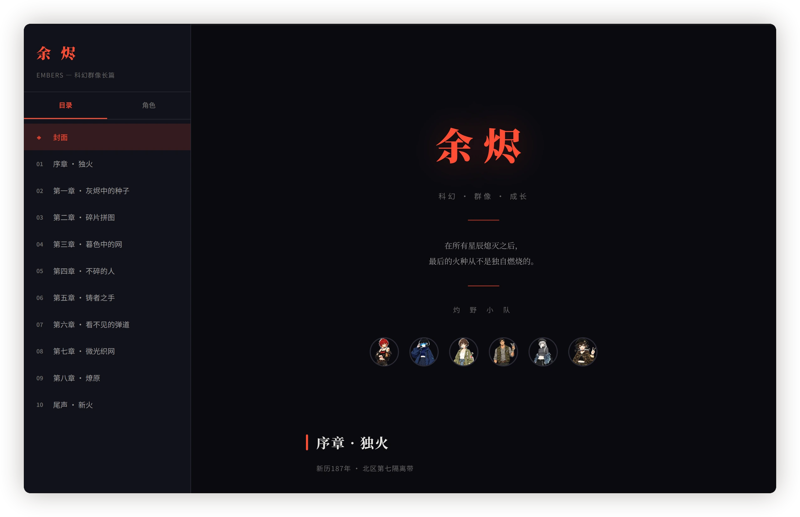
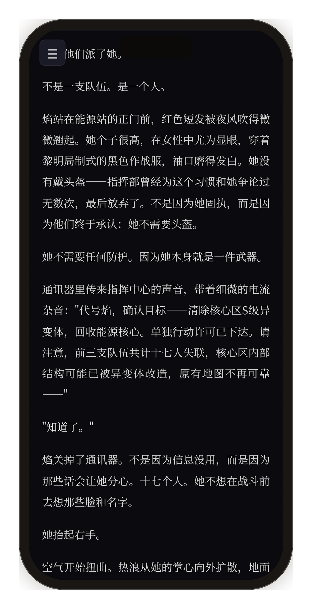
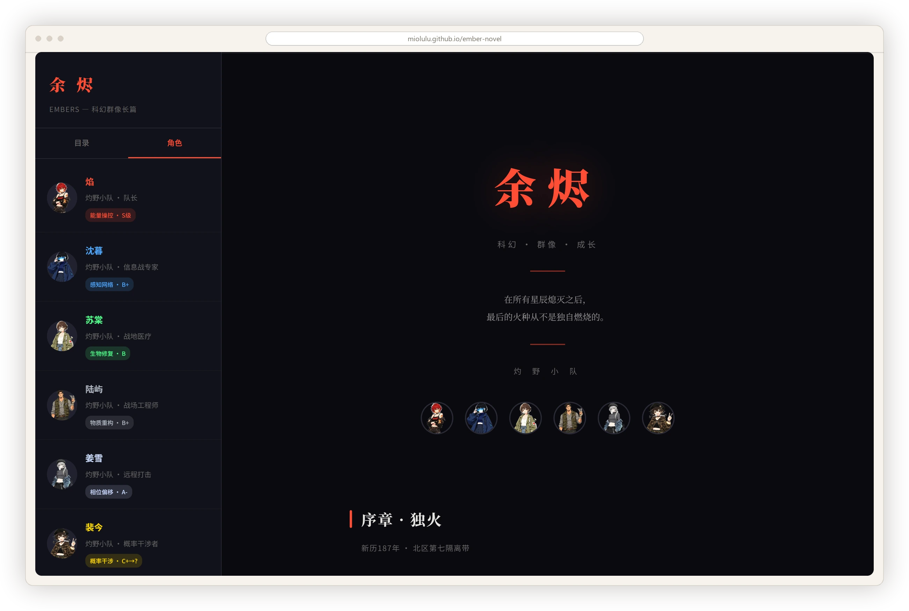

作品 04 / FICTION
余烬 Embers原创科幻群像长篇
一支叫灼野的小队，六个人，各有各的异能和等级。故事从新历 187 年的北区第七隔离带开始。
- 篇幅
- 序章 + 十章
- 技术
- 原生 HTML · CSS · JS · GitHub Pages
- 状态
- 线上可读

故事
新历 187 年，北区第七隔离带。序章「独火」从队长焰接到的一通通讯开始：核心区出现 S 级异变体，前三支小队失联，十七个人没回来。
六个角色
六个人一支小队：焰（队长，能量操控 S 级）、沈暮（信息战专家，感知网络 B+）、苏荣（战地医疗，生物修复 B）、陆屿（战场工程师，物质重构 B+）、姜雪（远程打击，相位偏移 A-）、裴今（概率干涉）。
每个人的档案卡只有四行：头像、名字、队内位置、异能名与等级。信息够读者在脑子里给人排座次，也够在忘了谁是谁的时候一眼找回来。
阅读器
封面、目录、角色三页共用左侧栏，来回切换不丢阅读位置。目录固定钉在左边，十章加序章刚好一屏。
正文栏宽 760px，行高 1.9，段间距大于行距，暗底配低对比正文。手机窄屏下自动收窄字号和边距，不会出现一行只有五个字。顶部一条 3px 进度线，读到哪儿一目了然。
界面

